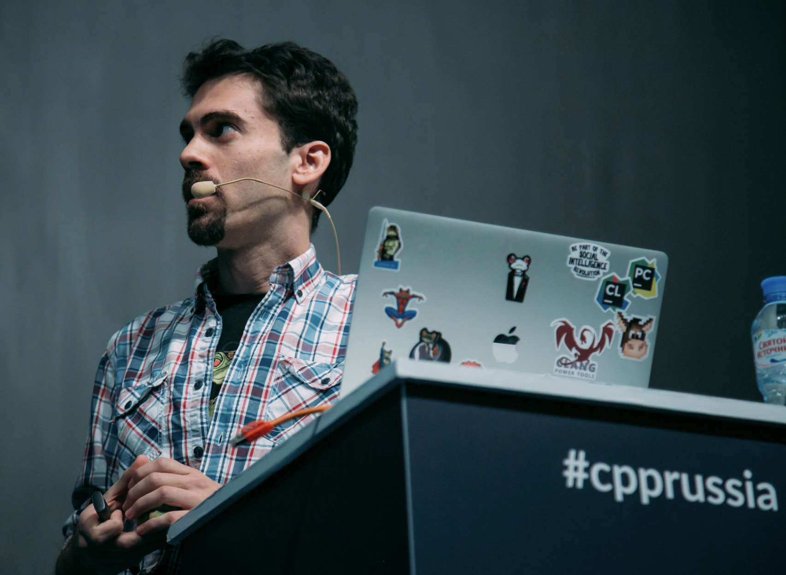

Javier G. Sogo | Senior software developer |
Javier G. Sogo | Senior software developer |
C++ Inside
Build once, run everywhere
24-25 septiembre de 2019
Madrid, España
Javier García Sogo
C++/Python/DevOps... engineer
@jgsogo
About me
Javier G. Sogo
Software | Conan.io | JFrog™
 jgsogo
@jgsogo
jgsogo
@jgsogo
One source of truth
Same algorithm
Same bugs
Better maintenance
Not always possible
Different programming languages
Domain knowledge
Big problems, big solutions
Cross-platform languages
Microservices
Simple get complex
Simple applications that turns into full architectures
Miss the monolith
First draft of my slides for @CodemoMadrid. I'm planning to run a server and call to it from the actual slides in order to execute a DLL I'll have compiled live 🤯. Afraid of the demo effect?
— jgsogo (@jgsogo) September 14, 2019
🗓️ 24/09/2019 pic.twitter.com/oZ5H8NQd2Z
Random:
First draft of my slides for @CodemoMadrid. I'm planning to run a server and call to it from the actual slides in order to execute a DLL I'll have compiled live 🤯. Afraid of the demo effect?
— jgsogo (@jgsogo) September 14, 2019
🗓️ 24/09/2019 pic.twitter.com/oZ5H8NQd2Z
Pseudo-random:
List of winners
AI: Simulation and modelling

Randomness , reproducibility , performance
Models are not easy
Neither random generators
Neither random generators
Algorithm implementation
Distribution sampling
Floting point representation
Reproducibility across different languages, compilers, runtimes...
Love the monolith
Recycle/reuse the algorithm
Reuse the random number generator
(Only) solution
Reuse the same binary